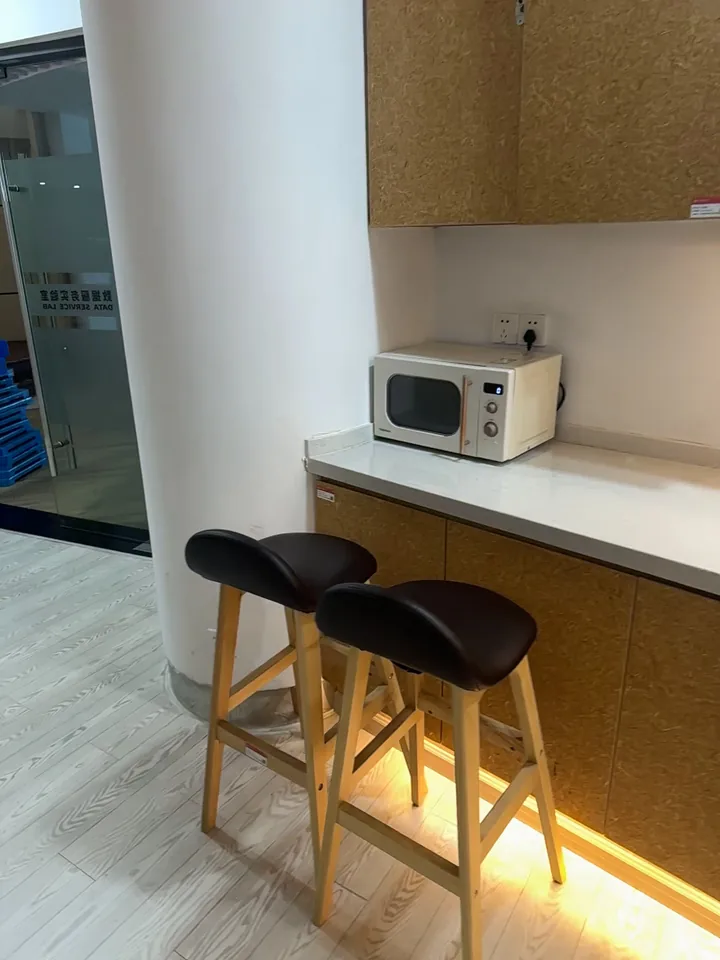
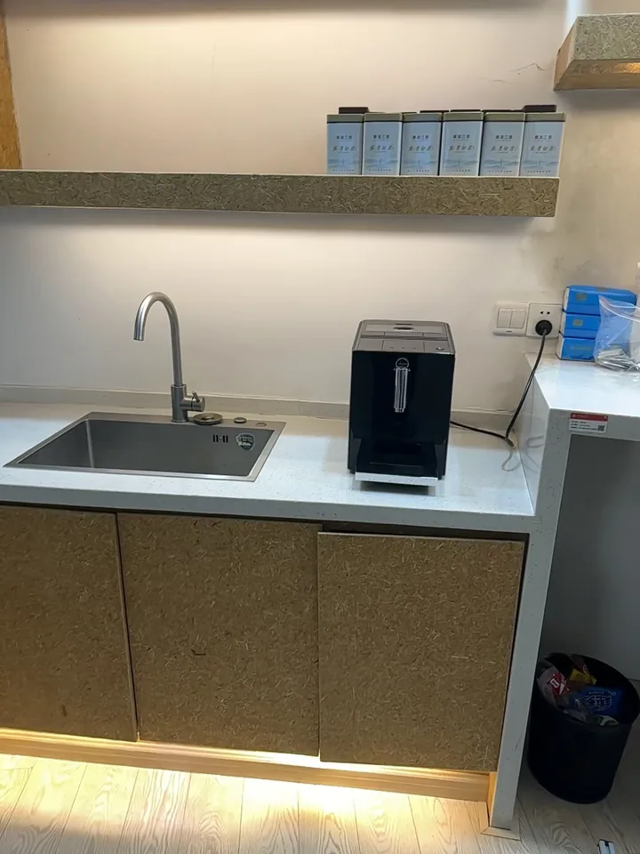
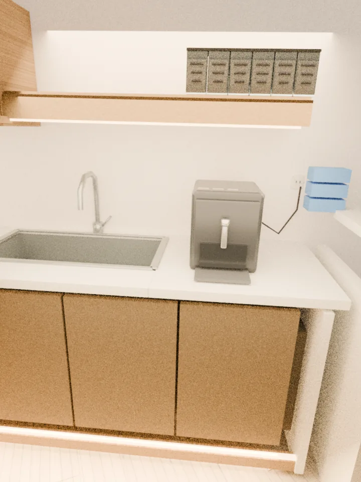
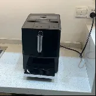
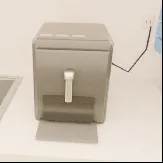
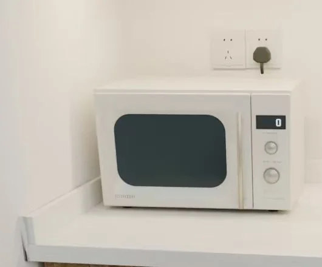
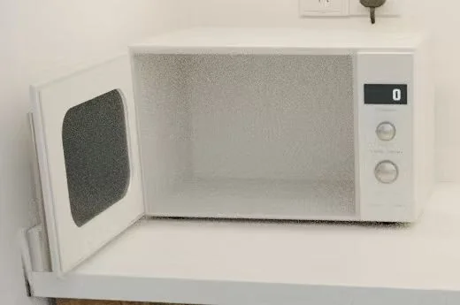
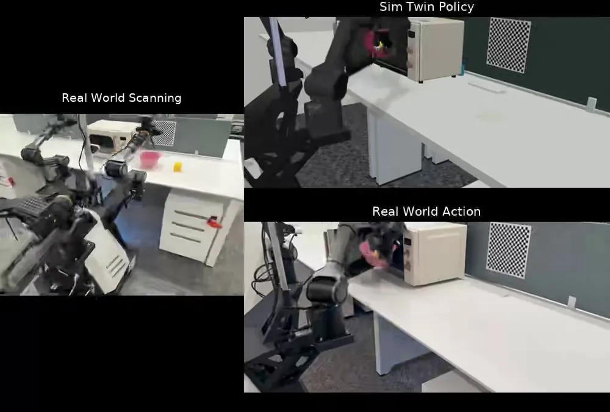
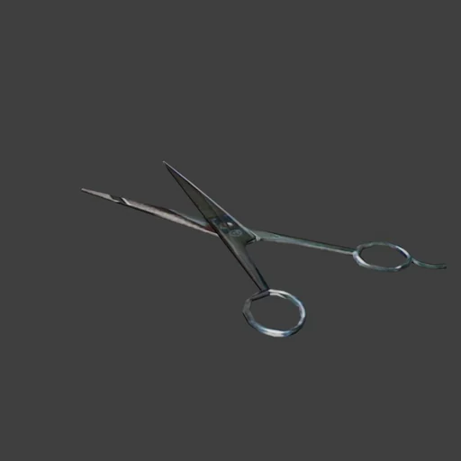

THE VISION
Interactive worlds for embodied intelligence
For decades, one of the central goals of artificial intelligence has been to build systems that can understand and interact with the world around them. The physical world is continuous, dynamic, and full of complex interactions. To act in it, a robot must understand how an object is structured, how it can move, how it responds to forces, and how it can be manipulated.
The idea of learning inside artificial worlds has long been imagined in science fiction. In The Matrix, Neo enters a virtual environment where he learns new abilities through interaction. That idea captures a vision for embodied intelligence.
To build truly intelligent machines, we need scalable worlds where they can learn, interact, and improve.
Real-to-sim-to-real offers a practical path toward this goal. We can reconstruct physical environments in simulation, use them to develop and test robot behaviors, and transfer those behaviors back to the real world. Creating these environments remains a challenge. They need to look like the world we observe, and they need to respond plausibly when a robot opens a door, grasps an object, or places it on a surface.
THE FRAMEWORK
Introducing NeoWorld-3
We introduce NeoWorld-3, an agentic framework for reconstructing simulation-ready interactive worlds from visual observations. The emergence of large vision-language models and coding agents creates an opportunity to approach reconstruction as a process of construction, verification, and refinement. Agents can write modeling programs, inspect what those programs produce, and revise them in response to visual and physical evidence.
We describe two parts of this approach. A scene program tree gives agents an editable representation of a world, from the layout of a room to the joints of an individual object. NeoSDK fits the programs to the observations and brings physical checks and repair into the reconstruction process.
SCENE PROGRAM TREE
A New Paradigm: Reconstruction Through Coding Agents
When people build a model of a complex object, they define its components, establish relationships between them, and adjust the dimensions as they learn more about the object. We bring this way of working to reconstruction. A coding agent can express the parts and relationships in a program, then revisit those decisions as new evidence becomes available.
In NeoWorld-3, the room forms the root of the program tree. Branches group related objects, such as a counter and its appliances. Each object has a Python construction program, parameters that define its geometry, and a pose in the scene. Repeated stools can share a single program and set of dimensions, with a separate pose for each stool. For a moving part such as a microwave door, the program also describes its joint type, axis, and range of motion.
Our interactive kitchen shows what this looks like in practice. Select an object in X-Ray + Code to inspect the construction operations recorded during development. The viewer pairs archived source with the reconstructed scene, which includes later revisions. Explore the reconstructed kitchen
AGENTIC WORLD CONSTRUCTION
Agentic World Construction with NeoMCP and NeoSDK
NeoWorld-3 uses a hierarchical agent architecture to scale from individual objects to complete scenes. A planner identifies the objects in the observations and assigns branches of the scene program tree to modeling agents. The agents work in parallel. Each can see the full scene and edit its assigned branch, so a local revision can be evaluated in the context of the whole room.
Through NeoMCP, agents can inspect the observations, render candidate reconstructions, and call the geometry and validation tools in NeoSDK. When a revision disagrees with the evidence across views, the system rolls it back. If a cabinet is missing a drawer, the owning agent can revise the program before the system fits the dimensions. The scene can improve one part at a time while keeping the parts that already work.
Observe. Build. Refine.
Real observations


Images, depth & camera poses
Scene planner
NeoMCP + NeoSDK
Geometry constructionGPU fitting & physical repair
Visual inspectionCode editing & rendering
cube() translate() rotate()
Real-Sim scene
 REAL
REAL
SIMSubtree handoff
Views · program · context
Author & revise
def build(θ):
body = shape(θ)
add_parts(body)
return objectEditable modeling programs
GPU batch fitting
Fit shape & pose
Compare & improve

REAL
SIMKeep or roll back edits
Check & repair


Meshes, joints & placement
Scene integration
Review subtree updates
Deploy to the real world
Coding agent
MuJoCo twin

GPU FITTING
Combining Reasoning with Numerical Fitting
One of the key challenges we encountered is that vision-language models can reason about an object's structure, yet have difficulty estimating precise dimensions and positions. A model can identify the right number of drawers and still misjudge the width of the cabinet.
NeoSDK runs many candidate versions of a program in parallel on the GPU and evaluates their renders against the observed silhouettes, contours, and depth. It uses the better-fitting candidates to guide the next round of search. A separate pose search aligns objects within the assembled scene. The agent defines how parts are built and related, while numerical fitting estimates the values that make the geometry and placement agree with the views.
On 212 objects from 3DCodeBench, NeoWorld-3 reaches a Framed IoU of 0.7310, compared with 0.5870 for VIGA. Across nine held-out RoboCasa365 scenes, DINOv3 similarity reaches 0.863 versus 0.785 for VIGA, and average object-center distance decreases from 42.5 cm to 15.6 cm.
PHYSICAL VALIDITY
Building Simulation-Ready Interactive Worlds
For embodied intelligence, reconstruction quality is ultimately measured by interaction. A drawer can agree with every photograph and still intersect its cabinet when it opens. An object can look correctly placed from the available views and still lack support in simulation.
After each build, NeoSDK checks for open meshes, evaluates joints at sampled positions across their declared motion ranges, and looks for objects that intersect their surroundings or lack support. It can close open meshes while keeping moving links separate, or make small placement corrections that remain consistent with the observations. Problems that require a structural revision go back to the agent that owns the affected branch.
In the RoboCasa365 ablation, enabling export-time repair raises the share of surface area belonging to closed meshes from 77.9% to 100.0%, with the scene DINOv3 score holding at 0.863. On 77 selected PartNet-Mobility assets, NeoWorld-3 reaches 91.45% joint-type accuracy and records the lowest joint-axis and pivot errors among the compared methods.
SCENE RECONSTRUCTION
From observations to a reconstructed world
The floor-completed Scene 01 is shown without the ALOHA robot. The video pairs camera-matched excerpts from the original capture with renders of the revised scene.
Unable to load this video. Open video file ↗
INTERACTIVE SCENE 01
Explore the revised world and its structure.
The floor-completed scene opens with its materials and no robot. Click any object to reveal the transparent scene structure and the recorded construction operations behind that object.
click an object for X-ray + code · drag to rotate · scroll to zoom
ARTICULATED ASSETS
Object articulation
Compare each source image with its interactive reconstruction, then inspect part hierarchies and joint limits using the controls below.

Loading scissors reference…
Loading object…
Revolute joints: degrees · Prismatic joints: normalized scene unitsInteractive kinematic demonstration
QUANTITATIVE RESULTS
Experiments
Selected results from the object, articulation, and scene evaluations.
- 01NeoWorld-3 OURS0.7139
- 02VIGA0.6930
- 03Codex0.6502
- 04Codex + BlenderMCP0.6457
- 05Direct GPT0.6316
- 06Articraft0.6086
- 01NeoWorld-3 OURS0.7310
- 02VIGA0.5870
- 03Articraft0.4971
- 04Codex + BlenderMCP0.4886
- 05Codex0.4870
- 06Direct GPT0.4776
- 01NeoWorld-3 OURS0.0380
- 02VIGA0.0602
- 03Direct GPT0.0690
- 04Articraft0.0694
- 05Codex0.0701
- 06Codex + BlenderMCP0.0717
- 01NeoWorld-3 OURS99.1%
- 02Articraft69.8%
- 03Codex + BlenderMCP49.3%
- 04VIGA40.3%
- 05Direct GPT36.3%
- 06Codex33.7%
Metrics are computed over successfully executed assets.
- 01NeoWorld-3 OURS91.45%
- 02Codex + BlenderMCP90.00%
- 03Codex89.86%
- 04Articraft89.33%
- 05Direct GPT87.50%
- 01NeoWorld-3 OURS0.2687
- 02Codex + BlenderMCP0.2932
- 03Codex0.3228
- 04Articraft0.3629
- 05Direct GPT0.4036
- 01NeoWorld-3 OURS0.863
- 02VIGA0.785
- 03Codex + BlenderMCP0.761
- 04Codex0.743
- 05Direct GPT0.662
- 01NeoWorld-3 OURS15.6 cm
- 02VIGA42.5 cm
- 03Codex50.6 cm
- 04Codex + BlenderMCP56.9 cm
- 05Direct GPT109.1 cm
- 01NeoWorld-3 OURS0.284
- 02VIGA0.018
- 03Codex0.012
- 04Direct GPT0.007
- 05Codex + BlenderMCP0.005
- 01NeoWorld-3 OURS100.0%
- 02NeoWorld-3 without repair77.9%
Closure is weighted by surface area within each scene. The visual similarity score is 0.863 with either export.
REAL–SIM–REAL
From Simulation Back to the Real World
We use the reconstructed world as a MuJoCo twin in which a coding agent can write, rehearse, and revise robot task programs. The programs are then executed on a physical dual-arm robot. A fresh wrist-camera scan helps align the target before manipulation, and contact feedback helps the robot interact with articulated objects.
Our microwave video shows this process during development. To evaluate transfer, we tested four tabletop tasks on ten held-out layouts per task. The robot stacked bowls, stood up bottles, placed objects in a basket, and filled a pen holder. NeoWorld-3 succeeded in 21 of 40 trials (52.5%), compared with 5 of 40 (12.5%) for π0.5 and 3 of 40 (7.5%) for SIMPACT. The NeoWorld-3 task programs were developed without task demonstrations, teleoperation data, or task-specific policy training. Before evaluation, the coding agent refined the programs on separate real-robot layouts using logs and wrist-camera images, with occasional operator hints.
Unable to load this video. Open video file ↗
ARTICULATED ASSETS
NeoWorld-10K
To help build interactive environments at scale, we used NeoWorld-3 to create NeoWorld-10K, a collection of 10,000 articulated assets across 912 leaf categories and 19 domains. We start with four synthesized views per asset and reconstruct an editable geometry program with explicit joints. Reviewers examine the reference views and reconstructed assets, exercise the moving parts, and check their behavior in simulation. Each asset includes source code, a Blender file, a URDF model, and joint annotations.
LOOKING AHEAD
Looking Ahead
We believe the ability to write, test, and revise programs opens up a new direction for 3D reconstruction. A reconstructed world can become a place where an embodied agent practices a behavior, gathers physical feedback, and improves how it acts.
Images give us a starting point. Properties such as friction, internal mass distribution, and hidden joint limits remain uncertain from passive observation. We want to explore how robots can probe their surroundings and use what they learn to update the reconstructed world. Over time, the worlds robots learn in could improve through the same interactions that help the robots learn.